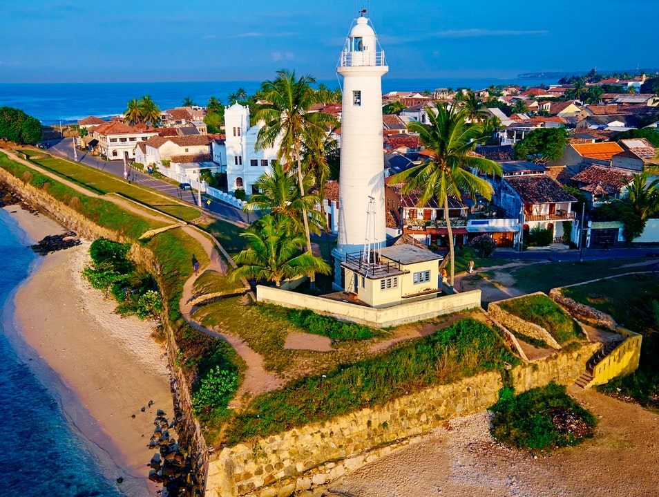
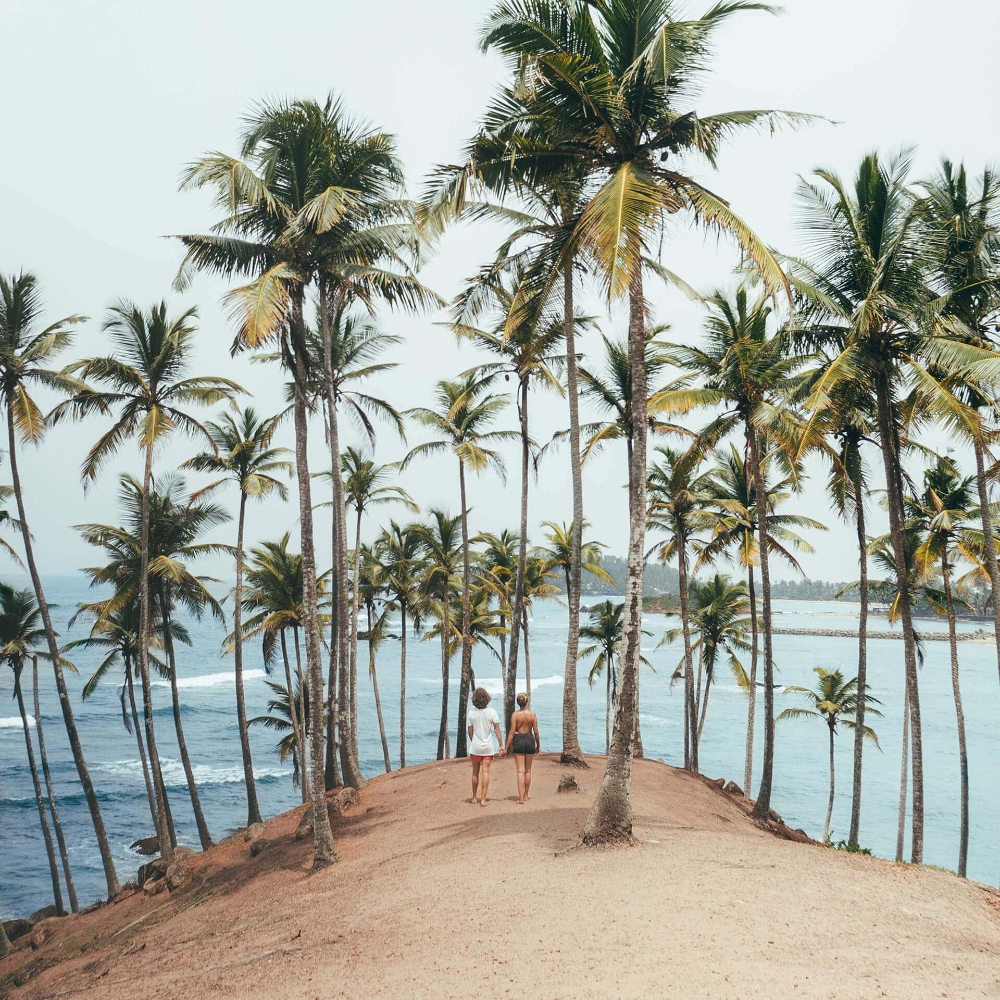

The Southern Province of Sri Lanka is one of the nine provinces of Sri Lanka, the first level administrative division of the
country. The provinces have existed since the 19th century but did not have any legal status until 1987 when the 13th Amendment
to the Constitution of Sri Lanka established provincial councils. It is the 7th largest province by area and is home to 2.5 million
people, the 3rd most populated province. The province is bordered by Sabaragamuwa Province and Uva Province to the North, Eastern
Province to the Northeast, Western Province to the Northwest and the Indian Ocean to the South, West and East. The Province's
capital is Galle.
1. Galle Fort
Galle (formerly Point de Galle) is a major city in Sri Lanka, situated on the southwestern tip, 119 kilometres (74 mi) from Colombo.
Galle is the provincial capital and largest city of Southern Province, Sri Lanka and is the capital of Galle District.
Galle was known as Gimhathiththa before the arrival of the Portuguese in the 16th century, when it was the main port on the island.
Ibn Batuta, a Moroccan Berber Muslim traveller in the 14th century, referred to it as Qali.Galle reached the height of its development
in the 18th century, during the Dutch colonial period.
Galle is the best example of a fortified city built by the Portuguese in South and Southeast Asia, showing the interaction between
Portuguese architectural styles and native traditions. The city was extensively fortified by the Dutch during the 17th century from
1649 onwards. The Galle fort is a world heritage site and is the largest remaining fortress in Asia built by European occupiers.

Other prominent landmarks in Galle include the city's natural harbour, the National Maritime Museum, St. Mary's Cathedral founded by
Jesuit priests, one of the main Shiva temples on the island, and Amangalla, the historic luxury hotel. On 26 December 2004, the city was
devastated by the massive tsunami caused by the 2004 Indian Ocean earthquake, which occurred off the coast of Indonesia a thousand miles
away. Thousands were killed in the city alone. Galle is home to the Galle International Stadium, which is considered to be one of the
most picturesque cricket grounds in the world.
The ground, which was severely damaged by the tsunami, was rebuilt and test matches resumed there on 18 December 2007.
2. Mirissa Beach
Mirissa is a small town on the south coast of Sri Lanka, located in the Matara District of the Southern Province. It is approximately
150 kilometres (93 mi) south of Colombo and is situated at an elevation of 4 metres (13 ft) above sea level. Mirissa's beach and
nightlife make it a popular tourist destination. It is also a fishing port and one of the island's main whale and dolphin watching
locations.
Mirissa is the largest fishing port on the south coast and is known for its tuna, mullet, snapper and butterfish.
In 1980 the first tourist accommodation was built however it wasn't until the mid-1990s that tourism to the town started to dramatically
increase.
Mirissa was affected by the tsunami caused by the 2004 Indian Ocean earthquake, with numerous homes, guesthouses, shops, schools and
temples destroyed or damaged and fourteen reported deaths.

Mirissa is located on the A2 Highway, connecting Colombo to Wellawaya.
The Mirissa railway station is located, approximately 2 km (1.2 mi) to the east of Mirissa, on the Coastal or Southern Rail Line
(connecting Colombo through to Matara).
Mirissa owns some of Sri Lanka’s best and glamorous sunsets and sunrises due to its crescent formation. This palm fringed land is
one of the main whale and dolphin watching hotspots in the country offering a tranquility stay while at your holiday. Mirissa is
the ideal place for surfing, snorkeling, Jetski and other watersports.
Mirissa is noted as the largest fishing port which is well known for its flavourful tuna, mullet, snapper and butterfish.
Mirissa is known for its exquisite sandy beach which renown its visitors dreams of a tropical paradise land into an everyday
reality. Settled in the Southern coastal belt of the country,.
3. Sinharaja Forest Reserve
Sinharaja Forest Reserve is a forest reserve and a biodiversity hotspot in Sri Lanka. It is of international significance and has
been designated a Biosphere Reserve and World Heritage Site by UNESCO.
According to International Union for Conservation of Nature (IUCN), Sinharaja is the country's last viable area of primary tropical
rainforest. More than 60% of the trees are endemic and many of them are considered rare. 50% of Sri Lankan's endemics species of animals
(especially butterfly, amphibians, birds, snakes and fish species). It is home to 95% endemic birds.
The hilly virgin rainforest, part of the Sri Lanka lowland rain forests ecoregion, was saved from the worst of commercial logging by its
inaccessibility, and was designated a World Biosphere Reserve in 1978 and a World Heritage Site in 1988.
Because of the dense vegetation, wildlife is not as easily seen as at dry-zone national parks such as Yala. There are about 3
elephants, and 15 or so[vague] leopards. The most common larger mammal is the endemic purple-faced langur.
Birds tend to move in mixed feeding flocks, invariably led by the fearless Sri Lanka Crested Drongo and the noisy orange-billed
babbler. Of Sri Lanka's 26 endemic birds, the 20 rainforest species all occur here, including the elusive red-faced malkoha,
green-billed coucal and Sri Lanka blue magpie.
Reptiles include the endemic green pit viper and hump-nosed vipers, and there are a large variety of amphibians, especially tree frogs.
Invertebrates include the endemic Sri Lankan birdwing butterfly and leeches.
The reserve is well-integrated with the local population who live in some dozens of villages dotted along the border.
The villages are more in number along the southern border whilst the presence of some large estates along the northern
border has resulted in only a few villages there. The locals collect herbal medicine, edible fruits, nuts, mushroo
ms, other non-timber forest products including bees honey and a sugary sap collected from a local palm species of the gen
us Caryota. The sap is converted into jaggery, a local brew and vinegar. Local people walk in the forest to collect the ab
ove items when they are not busy with their other agricultural pursuits.
4. Hikkaduwa Beach
The beaches in Hikkaduwa have been attracting tourists since the 1960s when it was first discovered. The beach stretches on spanning
over kilometers and hosts many fun activities to keep the tourists engaged. These water sports include snorkeling and scuba diving
for the adventure seekers. The clear waters beckon the nature lovers who wish to take a dip inside the waters to witness the vibrant,
colorful aquatic life. The coral sanctuary hosts gorgeous coral formations, which house a variety of fishes and large turtles.
The islets along the beach breed pockets of wildlife and are a wonderful way to interact with it.
The colorful coral reefs are definitely worth a visit before climate change upsets the critical balance of nature. Sri Lankas
vibrant coral reefs are home to a range of aquatic wildlife. They house a variety of fishes. Apart from the coral reefs, the sea
turtles are yet another major attraction. You could feed these turtles by hand! The turtles often bury their eggs into the sands
of the Hikkaduwa beach, and if you are lucky enough you can even watch new hatchlings make their way into the sea!
Hikkaduwa beach - reputed as the second best surfing spot in Sri Lanka.
Hikkaduwa Coral Sanctuary - located a few hundred metres offshore. The sanctuary has approximately seventy varieties of multi-coloured
corals
Things to do at Hikkaduwa Beach
Hikkaduwa is famous for serving delicious seafood curries, relaxing massages, Buddhist temples, and watersports such as surfing,
snorkeling, and diving. The beaches in Hikkaduwa may not be at par with Bali or Goa, but it does attract a fair amount of regulars.
.jpg) Sinharaja Forest Reserve is a forest reserve and a biodiversity hotspot in Sri Lanka. It is of international significance and has
been designated a Biosphere Reserve and World Heritage Site by UNESCO.
According to International Union for Conservation of Nature (IUCN), Sinharaja is the country's last viable area of primary tropical
rainforest. More than 60% of the trees are endemic and many of them are considered rare. 50% of Sri Lankan's endemics species of animals
(especially butterfly, amphibians, birds, snakes and fish species). It is home to 95% endemic birds.
The hilly virgin rainforest, part of the Sri Lanka lowland rain forests ecoregion, was saved from the worst of commercial logging by its
inaccessibility, and was designated a World Biosphere Reserve in 1978 and a World Heritage Site in 1988.
Sinharaja Forest Reserve is a forest reserve and a biodiversity hotspot in Sri Lanka. It is of international significance and has
been designated a Biosphere Reserve and World Heritage Site by UNESCO.
According to International Union for Conservation of Nature (IUCN), Sinharaja is the country's last viable area of primary tropical
rainforest. More than 60% of the trees are endemic and many of them are considered rare. 50% of Sri Lankan's endemics species of animals
(especially butterfly, amphibians, birds, snakes and fish species). It is home to 95% endemic birds.
The hilly virgin rainforest, part of the Sri Lanka lowland rain forests ecoregion, was saved from the worst of commercial logging by its
inaccessibility, and was designated a World Biosphere Reserve in 1978 and a World Heritage Site in 1988.
 Birds tend to move in mixed feeding flocks, invariably led by the fearless Sri Lanka Crested Drongo and the noisy orange-billed
babbler. Of Sri Lanka's 26 endemic birds, the 20 rainforest species all occur here, including the elusive red-faced malkoha,
green-billed coucal and Sri Lanka blue magpie.
Reptiles include the endemic green pit viper and hump-nosed vipers, and there are a large variety of amphibians, especially tree frogs.
Invertebrates include the endemic Sri Lankan birdwing butterfly and leeches.
Birds tend to move in mixed feeding flocks, invariably led by the fearless Sri Lanka Crested Drongo and the noisy orange-billed
babbler. Of Sri Lanka's 26 endemic birds, the 20 rainforest species all occur here, including the elusive red-faced malkoha,
green-billed coucal and Sri Lanka blue magpie.
Reptiles include the endemic green pit viper and hump-nosed vipers, and there are a large variety of amphibians, especially tree frogs.
Invertebrates include the endemic Sri Lankan birdwing butterfly and leeches.
 The beaches in Hikkaduwa have been attracting tourists since the 1960s when it was first discovered. The beach stretches on spanning
over kilometers and hosts many fun activities to keep the tourists engaged. These water sports include snorkeling and scuba diving
for the adventure seekers. The clear waters beckon the nature lovers who wish to take a dip inside the waters to witness the vibrant,
colorful aquatic life. The coral sanctuary hosts gorgeous coral formations, which house a variety of fishes and large turtles.
The islets along the beach breed pockets of wildlife and are a wonderful way to interact with it.
The beaches in Hikkaduwa have been attracting tourists since the 1960s when it was first discovered. The beach stretches on spanning
over kilometers and hosts many fun activities to keep the tourists engaged. These water sports include snorkeling and scuba diving
for the adventure seekers. The clear waters beckon the nature lovers who wish to take a dip inside the waters to witness the vibrant,
colorful aquatic life. The coral sanctuary hosts gorgeous coral formations, which house a variety of fishes and large turtles.
The islets along the beach breed pockets of wildlife and are a wonderful way to interact with it.